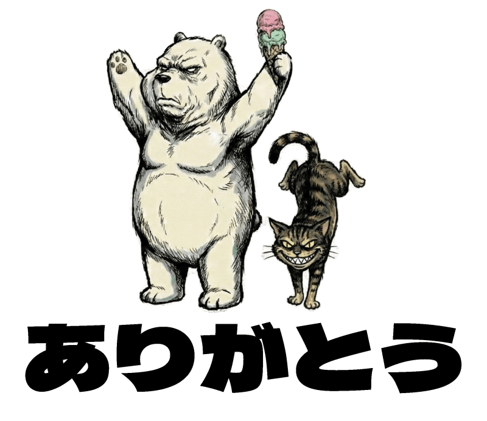
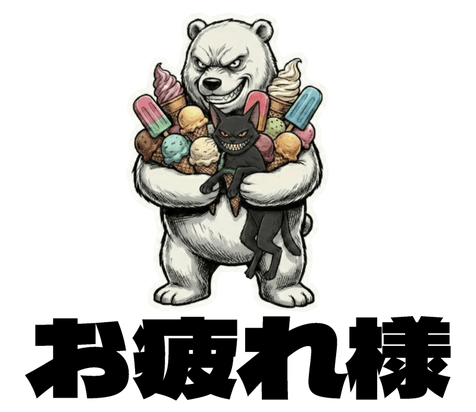
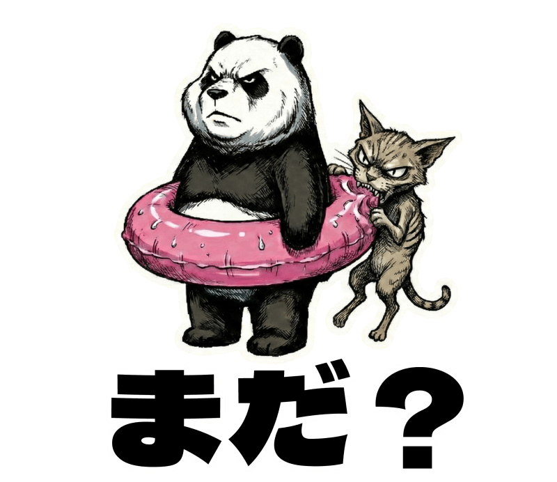
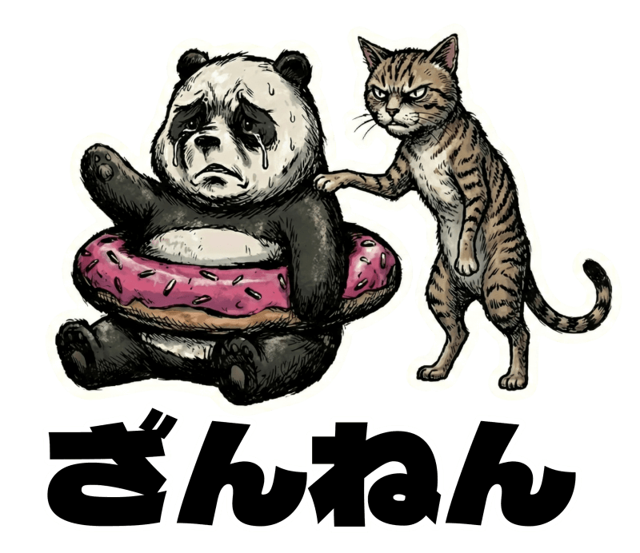
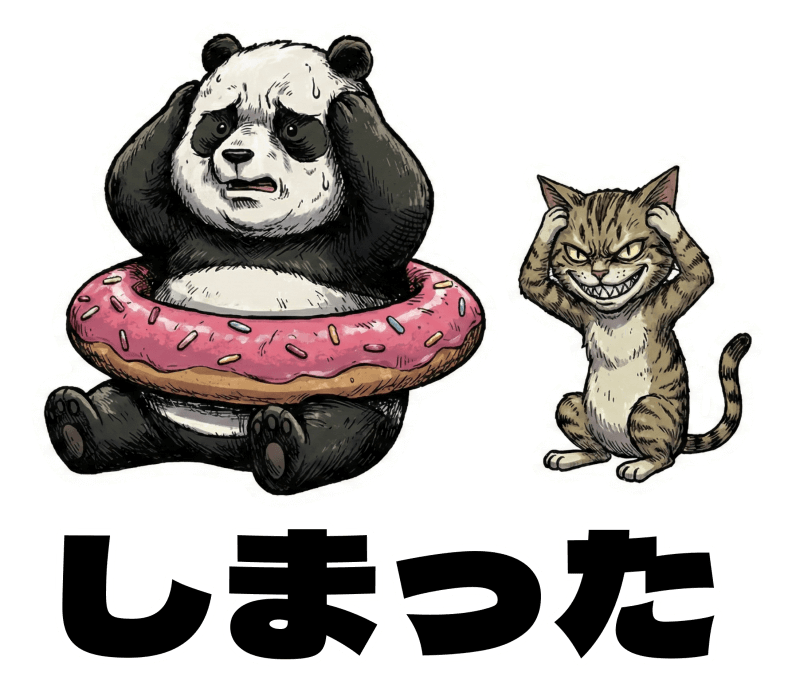
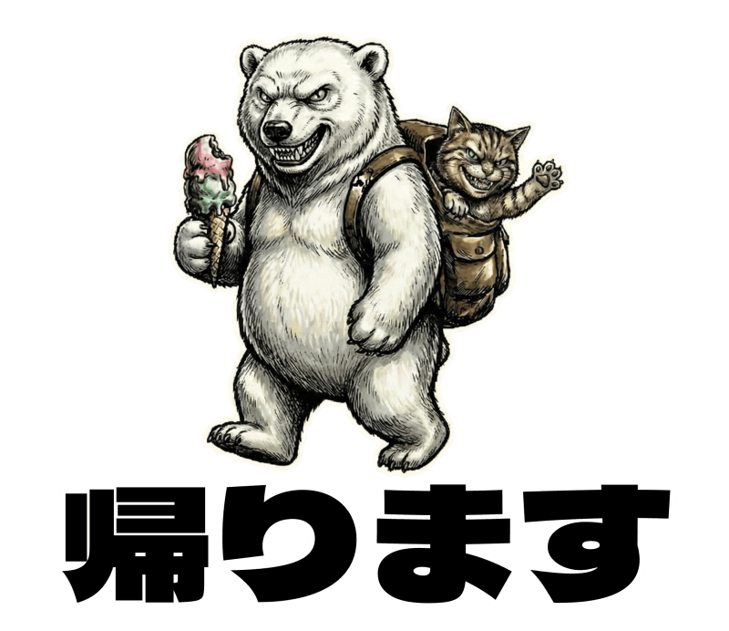
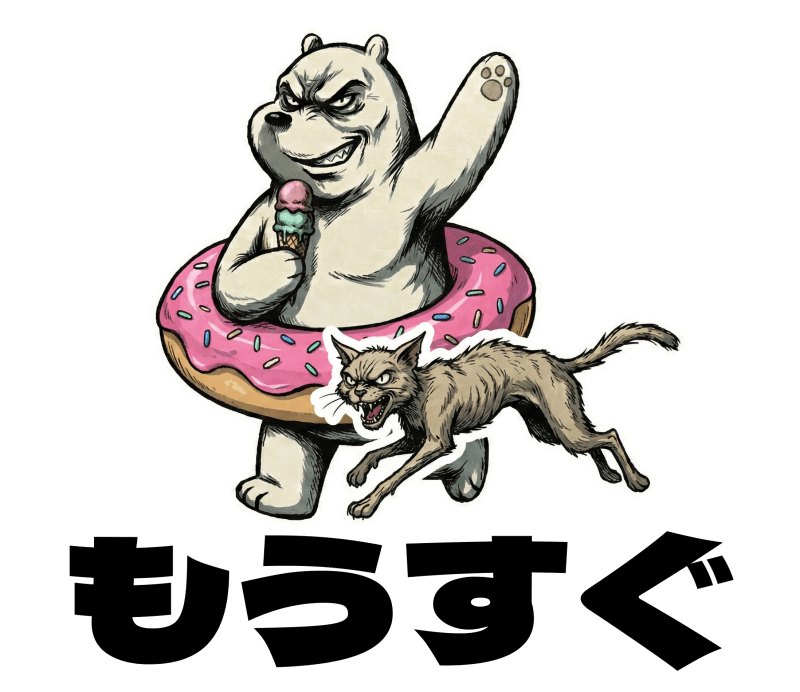
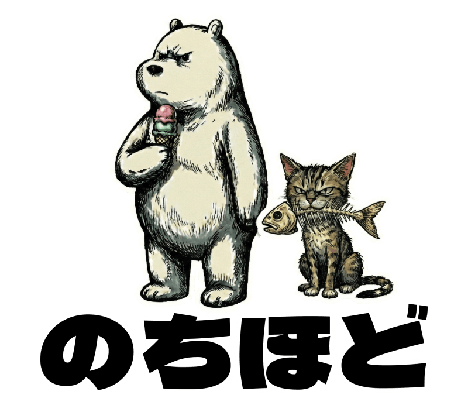

Vol.07 / Digital Craft Special
AI×GIMPで作る！
LINEスタンプ制作完全ガイド
2025.12.24 UP

◎ STEP 1：AIでキャラクターを生成する
まずは、スタンプの核となるキャラクターをAIで作成します。一貫性を持たせるのがコツです。
- ・プロンプトの工夫： 同じキャラが出るよう詳細に設定。
- ・背景はシンプルに： 後で消しやすいよう白や単色がベスト。
- ・バリエーション： 喜怒哀楽を一度に生成させると楽です。
◎ STEP 2：画像編集ソフト（GIMPなど）での加工作業
生成した画像をスタンプ形式に整えます。ここが職人の見せ所！
- ・サイズ： 横縦比(37:32） 最終的に最大370×320pxになります。上下左右に10px程度の余白を。
- ・透過処理： 「アルファチャンネルを追加」して背景を削除。
- ・文字入れ： 視認性の高い太めのフォントに縁取りを。
- ・書き出し： 拡張子は必ず「.png」で保存！
◎ STEP 3：審査通過のための設定
LINEスタンプメーカー（アプリ）で作るのが一番楽です。LINE Creators Marketで申請する際、ここを間違えると審査が長引きます。
✅ 販売エリア： 「日本のみ」を選択（海外を含むと審査が厳しくなります）
✅ 個数： 8個から申請可能（最初は8個で練習がおすすめ）
✅ プライベート設定： 友達だけに教えたいなら「非公開」設定も可能
📸 Stamp Gallery (左右ボタンでめくれます)










📘 公式ガイドライン
作成前に必ず一度は目を通しておきましょう。